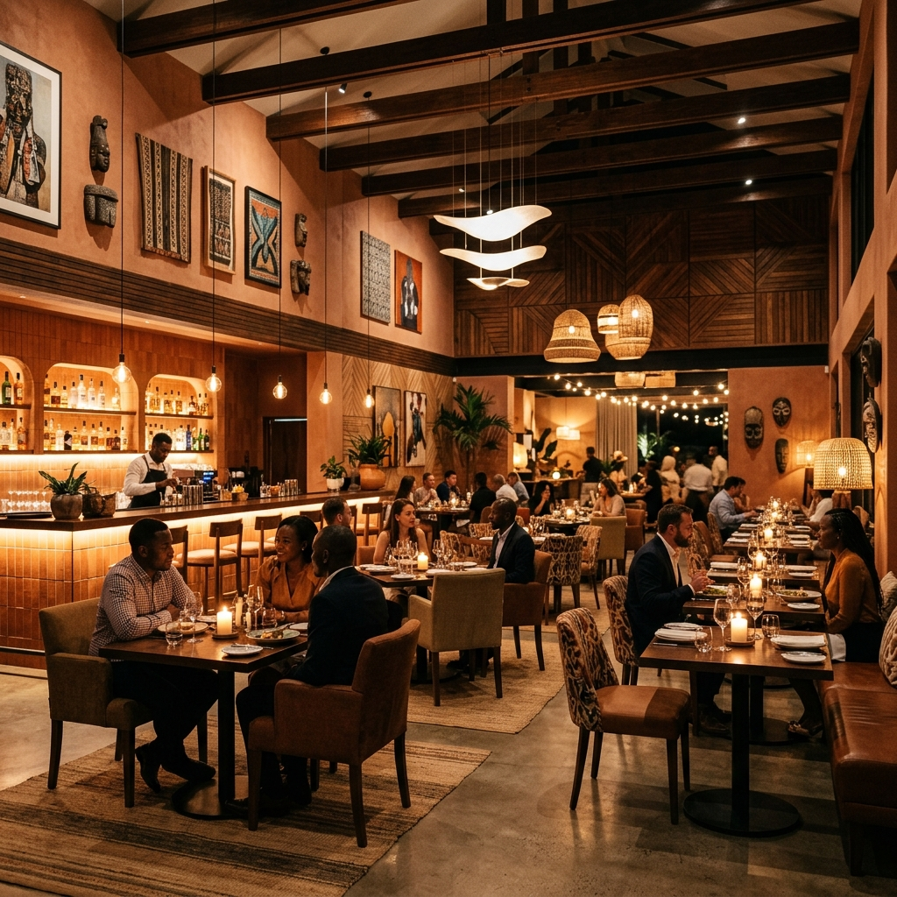

Notre Carte
Découvrez des plats locaux revisités avec des produits du terroir, alliant tradition et modernité.


Un voyage culinaire entre le Burundi et le Togo au cœur de Kara.
Né d'une passion commune de Mariam et Dambé, un couple burundo-togolais, Afro Roots est bien plus qu'un simple restaurant. C'est un véritable carrefour culturel situé au Rond-point Lama à Kara.
La décoration s'inspire des éléments traditionnels africains, offrant un cadre chaleureux et élégant, parfait pour s'évader le temps d'un repas.
Découvrez des plats locaux revisités avec des produits du terroir, alliant tradition et modernité.

Laissez-vous transporter par la musique ! Afro Roots, c'est aussi un live club vibrant. Tous les vendredis soirs dès 20h00, venez vibrer au rythme de nos orchestres locaux dans une ambiance intime et chaleureuse.
Réserver une table